1. 개요
효빈광역시 최대의 서브컬처 성지인 리에라몰 점장 임세혁과 아내 연월엽 사이에서 태어난 장녀(첫째). 현재 해천대학교 K-컬처예술대학 미디어영상콘텐츠학과에 재학 중이다.
어머니의 지독한 혐덕(오타쿠 혐오) 조기 교육을 뼛속 깊이 받고 자라, 학창 시절 학교 친구들과 심지어 친아버지에게까지 입에 담지 못할 막말을 쏟아부었던 무시무시한 '흑역사'를 보유하고 있다. 하지만 2022년 집안의 수백억 대 부채를 단숨에 청산해버린 리에라몰의 자본주의 기적과 부모님의 화해를 목격하며 심각한 인지부조화를 겪었다.
이후 2023년 2월, 하스노소라 여학원 스쿨 아이돌 클럽의 후지시마 메구미가 공개되자, 자신의 이름(은혜=메구미)과 생일(메구미 생일 1220을 완벽히 거울 모드로 뒤집은 0221)이 우주적 운명처럼 얽혀 있음을 깨닫고 진성 '메구미 오시'로 각성하며 지난날의 업보를 뼈저리게 회개했다.
현재는 메구미를 쏙 빼닮은 뛰어난 외모와 글래머러스한 몸매, 그리고 특유의 통통 튀는 백치미 바보짓(?)을 십분 활용하여 인터넷 방송인 및 틱톡커로 활동하며 효빈시 서브컬처계의 차세대 수석 스트리머로 맹활약 중이다. 비록 아빠 엄마의 좋은 머리를 물려받지 못해 공부는 더럽게 못하지만, 특유의 매력 하나로 세상을 평정하고 있는 리에라몰의 사랑스러운 장녀다.
2. 생애 및 학창 시절
2.1. 이사 폭격과 청엽구 동리초등학교 시절
2006년 2월 21일, 효빈광역시 안천구 당가동에서 태어났다. 은혜가 태어날 무렵, 할아버지 임승현이 운영하던 안천백화점(現 리에라몰)은 이미 외환위기의 후유증으로 심각한 경영난을 겪고 있었다. 사업 자금을 융통하느라 아버지 임세혁은 집을 팔고 미친 듯이 전세와 월세를 전전하며 잦은 이사를 다녀야 했다.
이 지독한 잦은 이사 탓에 은혜는 당가동에서 태어났음에도, 초등학교는 뜬금없이 청엽구에 있는 동리초등학교를 다니게 되었다. 재미있는 점은, 이 동리초등학교가 훗날 후지시마 메구미 유니버스의 성지인 '등도사회복지재단' 산하 복지관 및 문화의 집과 가장 가까운 거리에 있는 학교라는 것이다. 은혜 본인은 "이건 내가 어릴 적부터 등도(메구미)의 정기를 받으며 자랐다는 완벽한 증거야 큥!"이라며 기적의 억지 논리를 펼치며 자랑스러워한다.
초등학교 졸업 후, 아버지가 다시 빚을 내어 당가동으로 거처를 옮기면서 중·고등학교는 본래의 고향인 당가동에서 당가중학교와 당가고등학교를 다녔다.
2.2. 환장의 일코 만남과 2021년 줌(Zoom) 링크 대참사
중고등학교 시절, 은혜는 어머니 연월엽의 지독한 '혐덕 조기 교육'을 받고 자랐다. 어머니는 학창 시절의 끔찍했던 스토커 트라우마 때문에 "애니메이션 보고 다니는 놈들은 사회의 암적인 병균이다. 절대 엮이지 말고 상종도 하지 마라"라고 귀에 못이 박히도록 세뇌를 시켰다. 하지만 은혜가 처음부터 본색을 대놓고 드러낸 것은 아니었다.
2019년 당가중학교 입학 첫날, 임은혜는 자리가 가깝다는 이유로 세 명의 단짝 친구를 사귀게 된다. 바로 안공주(안요지 히메 오시, 이름마저 安+히메), 유리내(오사와 루리노 오시, 독음 동일), 백모모(모모세 긴코 오시, 백+모모)였다. 이 당시 세 친구는 자신의 덕력을 철저히 숨기는 일명 '일코(일반인 코스프레)'의 달인들이었기에 가방에 굿즈 하나 없는 클린한 상태였고, 은혜는 이들이 완벽하게 '순결한 일반인'인 줄 알고 덥석 친해지고 말았다. 은혜 역시 친구들 앞에서는 "만화 같은 건 좀 징그럽지 않아?" 정도로 가볍게 포장하며 평범한 척을 했기에, 세 사람은 은혜를 '서브컬처에 약간 거부감만 있는 참한 친구'로 완벽하게 오해하며 3년간 화장실에서 몰래 가챠를 돌리는 이중생활을 이어갔다.
하지만 2021년 가을 3학년, 코로나19 비대면 수업이 한창이던 시기에 끔찍한 뇌관이 터져버렸다. 아침 1교시 온라인 클래스 줌(Zoom) 링크를 찾던 단톡방에, 안공주가 실수로 '역대급 작화 미소녀 3D 라이브 무대' 유튜브 링크를 복사+붙여넣기 해버린 것이다.
선생님이 아닌 눈 큰 만화 캐릭터들이 춤추는 영상을 탭한 은혜는 경악했고, 3년 내내 징그러운 오타쿠 병균들이 자신을 속였다는 배신감에 눈이 뒤집히고 말았다.
결국 며칠 뒤 대면 등교일, 은혜는 쉬는 시간에 친구들의 책상을 쾅 치며 폭발했다. "야, 너네 진짜 더럽고 역겨워. 그딴 거 보면서 나한테 숨기니까 재밌었냐? 냄새나는 병균이 내 옆에 있는 거 역겨우니까 내 책상 근처에 오지도 마! 우리 엄마가 너 같은 애들은 쓰레기랬어!"라며 대놓고 모욕적인 막말을 퍼부었던 것이다.
하지만 돌아온 반응은 싸늘했다. 오히려 정상적인 반 친구들(안공주, 유리내, 백모모)이 나서서 "은혜 너 진짜 예의 없고 밥맛이다. 실수로 링크 하나 보낸 거 가지고 병균이니 쓰레기니, 남의 부모님 귀한 자식들한테 막말하는 네 인성이 더 병균 같거든?!"이라며 은혜를 크게 질타하며 절교를 선언했다. 이 줌(Zoom) 링크 오발송 대참사는 훗날 은혜가 밤마다 발작을 일으키는 최악의 업보로 돌아오게 된다.
2.3. 혐덕 '한줌단' 합류와 교무실 참교육
단짝 친구들과 대판 싸우고 절교당한 은혜는 곧 당가중학교 내에 존재하던 극소수의 '혐덕(오타쿠 혐오) 무리'에 합류하게 된다. 당시 효빈광역시는 시장의 서브컬처 친화 정책 덕분에 취향 존중 풍조가 사회적 합의 수준으로 강했기에, 이 혐덕 세력은 전교생 500명 중 15명도 채 안 되는 초라한 '한줌단'이었다. 심지어 은혜가 들어간 가장 큰 무리조차 2~3학년을 영혼까지 끌어모아도 고작 9명(남5, 여4)에 불과했다.
이들은 스스로를 '정상인들의 최후의 보루'라 여겼지만 실체는 끔찍했다. 학교 폭력 가해자 일진 4명, 선민의식에 찌든 엘리트주의자 2명, 단순 악플러 3명으로 이루어진 기형적 집단이었다. 심지어 남자 5명 중 진짜 질이 나쁜 양아치들은 서브컬처에는 쥐뿔도 관심이 없으면서, 오직 예쁘장한 은혜에게 흑심을 품고 불쾌한 신체 접촉이나 으슥한 곳으로 끌고 가려는 더러운 사심을 채우려 했다.
결국 이들의 도를 넘은 만행(오타쿠 학생 괴롭힘 및 언어폭력)은 참다못한 일반 학생들의 집단 고발로 이어졌다. 학생부 교사에게 끌려간 은혜는 "네가 도덕 선생님이라도 돼?! 남의 소중한 취향을 짓밟고 모욕을 주는 네 그 못돼먹은 혓바닥과 폭력성이 백배 천배는 더 비정상적이고 사회적인 병균이야!!"라는 벼락같은 팩트 폭격과 함께 영혼까지 털리며 역대급 참교육을 당했다. 게다가 자신에게 징그럽게 웃던 남학생들이 교무실에서 "임은혜가 다 시킨 건데요?"라며 죄를 뒤집어씌우는 비열한 민낯을 보면서, 은혜는 "진짜 사회의 악질 병균은 만화 캐릭터를 좋아하는 애들이 아니라, 남의 취향을 짓밟으며 혐오를 즐기던 저 양아치 새끼들이었다"는 처절한 진리를 깨닫게 되었다.
2.4. 일진 무리의 협박과 'Aqours 어벤져스'의 구출 작전
2023년 초, 혐덕의 굴레에서 벗어나 진리를 깨달은 은혜가 이 일진 무리와 손절을 치려 하자 그들은 본성을 드러냈다. 은혜를 압박하며 뒤에서는 "임은혜가 일진 오빠들이랑 잤다"는 식의 음흉하고 더러운 헛소문을 퍼뜨렸고, 어느 날 으슥한 골목에서 은혜가 매몰차게 그들을 몰아내자 이성을 잃은 남학생이 선을 넘고 달려들었다.
은혜가 기겁하며 살려달라고 비명을 질렀을 때, 조금 떨어진 곳에서 이 상황을 목격한 것은 사과받기 전 냉전 상태였던 안공주, 유리내, 백모모였다. 이들은 은혜의 비뚤어진 행동이 엄마의 세뇌 탓임을 짐작하고 있었고, 무엇보다 여자를 성적 장난감 취급하는 일진들의 행태에 극도로 분노했다. 하지만 여고생 셋의 힘으로는 부족했고, 마침 근처를 지나던 압도적 피지컬의 'Aqours 오시 어벤져스'에게 도움을 요청했다.
이 어벤져스의 라인업은 도선요(요우 오시, 수영 베테랑), 이리자(리코 오시, 깡다구 펀치), 송과영(카난 오시 다이버, 폐활량 및 근력 고트)과 그들의 요우 오시 남친, 카난 오시 남동생까지 총 5명의 인간 흉기들이었다. 불의를 못 참는 효빈시의 기상답게, 이들은 망설임 없이 돌진해 일진 무리를 물리력으로 완벽하게 제압해 버렸다.
바닥에 처박힌 일진이 정신을 못 차리고 "야 임은혜 이 ㅆㅂ년아! 넌 어차피 나한테 먹히게 되어있어 ㅆㅂ!"이라며 폭언을 쏟아내자, 항상 차분하게 고전문학을 읊던 단정한 백모모의 이성의 끈이 완벽하게 끊어지고 말았다. 모모는 바닥에 깔린 일진에게 다가가 역사상 처음으로 어마어마한 사자후를 갈겼다.
이 살벌하고도 극적인 구출 사건(과 일진들의 경찰 연행)은 임은혜가 혐덕 무리와 완벽하게 인연을 끊는 계기가 되었고, 훗날 세 친구에게 영혼의 도게자를 박게 만든 가장 결정적인 도화선이 되었다.
2.5. 부모님의 극대노와 피의 숙청, 그리고 어벤져스 포상
이 끔찍한 골목길 사건이 경찰을 통해 부모님에게 전해지자, 리에라몰 점장 임세혁과 아내 연월엽은 그야말로 극대노(極大怒)하여 이성을 잃고 말았다. 특히 어머니 연월엽은 과거 20대 시절 지독한 스토커에게 시달리며 몹쓸 짓을 당할 뻔했던 끔찍한 트라우마(이로 인해 혐덕이 되었던)를 가지고 있었기에, 자신의 귀한 장녀가 쓰레기 같은 일진들에게 똑같은 수모를 겪을 뻔했다는 사실에 피눈물을 흘리며 분노를 폭발시켰다.
부모님은 곧바로 물리적인 폭력 대신 압도적인 자본주의와 법의 쓴맛(금융 치료 및 법적 참교육)을 시전했다. 임세혁은 효빈시 최고의 대형 로펌을 선임하여 이 일진 무리들을 상대로 미성년자 협박, 성희롱, 명예훼손(허위 소문 유포) 등의 형사 고소는 물론, 천문학적인 액수의 민사상 손해배상 소송까지 무자비하게 걸어버렸다. 합의는 일절 없었으며, 주동자 남학생들은 소년원(혹은 그에 준하는 무거운 처벌)을 면치 못했고 그들의 집안 역시 엄청난 합의금과 소송 비용에 짓눌려 완전히 박살이 나버렸다. 말 그대로 '피의 숙청'이었다.
반면, 절체절명의 위기에서 은혜를 구해준 'Aqours 오시 어벤져스 5인방(도선요, 이리자, 송과영 등)'과 은혜를 위해 소리쳐준 단짝 친구들(안공주, 유리내, 백모모)에게는 어마어마한 포상이 내려졌다. 임세혁 부부는 수소문 끝에 어벤져스 5인방을 모두 찾아내어 리에라몰 VIP실로 정중히 초대했다. 그리고 눈물을 흘리며 감사 인사를 전함과 동시에, 리에라몰 100만 원 상품권, 평생 전 매장 VIP 30% 할인권, 그리고 입이 떡 벌어질 만한 초호화 Aqours 한정판 굿즈 선물 세트를 안겨주었다.
이 압도적인 자본주의의 보은에 어벤져스 5인방은 "이래서 갓물주 점장님 하시는구나", "평생 리에라몰에 충성하겠습니다!"라며 환호했고, 은혜 역시 부모님의 든든한 보호 아래 과거의 악연(혐덕 무리)을 완벽하게 잘라내고 새 삶을 시작할 수 있게 되었다.
3. 가정 파탄의 위기와 뼈저린 참회 (이불킥의 밤)
3.1. "아빠는 벌레야!" 패륜적 폭언과 멸시
2021년, 대출 빚에 쪼들리던 아버지 임세혁이 현실 도피를 위해 안방 화장실에서 러브라이브 영상을 보며 콧소리로 웃고 있다가 어머니에게 발각되어 집안이 뒤집어지는 대참사가 벌어졌다.
어머니의 세뇌 교육을 받고 자란 은혜는, 자신의 아버지가 어머니가 그토록 혐오하던 '역겨운 씹덕'이었다는 사실을 알게 되자 엄청난 충격과 역겨움을 느꼈다. 그녀는 방문을 쾅 열고 나와 아버지에게 평생 지우지 못할 패륜적인 폭언을 쏟아부었다.
이 폭언 직후 은혜는 남동생 승민과 함께 방문을 걸어 잠그고, 2021년 내내 빚만 늘려가는 아버지를 철저히 투명 인간 취급하며 멸시했다. 아빠가 밥 먹자고 불러도 문 밖으로 쳐다보지도 않았고, 심지어 아버지가 쓰는 수건조차 더럽다며 다른 세탁기에 돌릴 정도로 심하게 아버지를 상처 입혔다.
3.2. 2022년의 인지부조화와 엄마의 대참회
하지만 2022년, Liella! 열풍으로 리에라몰이 수백억 원의 흑자를 내며 가문의 모든 빚을 털어버리는 거대한 자본주의의 기적이 일어났다. 아버지를 벌레 보듯 하던 어머니는 통장에 찍힌 잔고를 보자마자 남편에게 무릎을 꿇고 사과했고, 급기야 스토커 트라우마마저 금융 치료로 극복하고 남편 옆에서 진성 '하즈키 렌 오시'로 돌변해 같이 야광봉을 흔들고 있었다.
이 기괴한 태세 전환을 거실에서 실시간으로 직관한 은혜는 극심한 인지부조화에 빠졌다.
"아니, 엄마?! 애니 보는 놈들은 쓰레기 병균이라며?! 근데 왜 지금 엄마가 아빠랑 거실에서 'WE WILL!!'을 떼창하고 있는 건데?! 우리 집 진짜 미친 거야?!"
딸의 절규에 어머니 연월엽은 결국 딸 앞에 무릎을 꿇고 눈물을 흘리며 진심으로 사과했다.
"은혜야... 엄마가 널 잘못 가르쳤어. 세상에 나쁜 오타쿠만 있는 게 아니었어. 그건 엄마의 지독한 개인적 편견과 트라우마였단다. 너희 아빠는 훌륭한 분이셨어. 그리고... 자본주의와 렌 쨩은 참 위대해..."
어머니의 대참회를 통해 은혜는 겨우 엄마의 심정을 이해하면서도, 자신의 혐덕 교육이 잘못되었음을 뼈저리게 느끼게 되었다. 그리고 자신이 그동안 아버지에게 얼마나 큰 상처를 주었는지 깨닫게 되었다.
3.3. 17살 터울 늦둥이의 탄생: 육아 짬처리 악몽과 심쿵
부모님이 뜨겁게 화해한 2022년 말, 어머니가 넷째 막내동생을 임신했다는 소식을 듣자 은혜는 경악을 금치 못했다. 과거 동생 임승민(2009년생)과 여동생 임은연(2013년생)이 태어났을 때, 부모님이 백화점 빚을 갚느라 눈코 뜰 새 없이 바빠서 어린 자신이 억지로 기저귀를 갈고 분유를 타며 K-장녀로서 지독한 '육아 짬처리'를 당했던 끔찍한 악몽이 떠올랐기 때문이다.
은혜는 방에서 오열하며 막내의 탄생을 진심으로 두려워했다. 하지만 2023년, 막내동생 임시연이 태어나고 산후조리원에서 천사 같은 아기의 오목조목한 이목구비와 해맑은 미소를 직접 본 순간, 그 자리에서 완벽하게 '심쿵'해버리고 말았다.
"미쳤다... 너무 귀엽잖아 큥...💖" 결국 육아 짬처리를 그토록 저주하던 은혜는 자발적으로 젖병을 물리고 아기 띠를 매고 다니는 딸바보(?) 아니 동생바보가 되어버렸다. 지금도 인터넷 방송에서 가끔 막내동생을 안고 나오며 "우리 집 천사 큥!"을 시전하며 시청자들의 심장을 녹이고 있다.
3.4. 발작과 비명: 과거를 회상하는 이불킥의 밤
어머니의 참회 섞인 고백을 듣고, 은혜의 뇌리에는 자신이 학교 친구들과 불쌍한 아버지, 그리고 남동생에게 내뱉었던 쓰레기 같은 폭언들이 주마등처럼 스쳐 지나갔다. "오타쿠는 병균이야!", "아빠는 징그러운 벌레 같아!"라고 소리쳤던 과거의 자신이 얼마나 오만하고 역겨웠는지를 뼈저리게 깨달은 것이다.
그 날 이후, 은혜는 밤에 잠을 자려다 과거의 혐오 발언들이 떠오를 때면 이불을 차다 못해 천장을 뚫을 기세로 발작을 일으키며 "아아아악!! 내가 미쳤지 미친X!! 내가 개쓰레기야!! 아아악!!" 하고 비명을 질러대며 침대를 뒹구는 심각한 '이불킥 후유증'에 시달리고 있다. 본인 피셜 "가장 지워버리고 싶은 끔찍한 흑역사"라고. 너무나도 심한 죄책감과 쪽팔림 때문에, 은혜는 부모님이 화해한 2022년 내내 아버지에게 감히 얼굴을 들고 다니지 못하고 쭈뼛거려야만 했다.
3.5. 영혼의 도게자와 애니플러스 굿즈 조공
골목길에서 벌어진 일진 무리의 위협과 구출 작전 이후 당가고등학교 1학년에 나란히 진학하게 된 2023년 봄. 후지시마 메구미에게 거하게 치이며 과거를 뼈저리게 반성한 임은혜는, 도와준 친구들에게 정식으로 사죄와 답례를 하기 위해 인생 최대의 '조공'을 기획한다.
아버지 생일 선물을 사고 남은 알바비를 영혼까지 탈탈 턴 은혜는, 애니플러스 샵 앞에서 이틀 밤낮을 노숙하며 친구들의 운명적 오시인 하스노소라 굿즈를 싹쓸이해 왔다. 그리고 교실 복도 한복판에서 양손에 터질 듯한 쇼핑백을 내려놓고 완벽한 도게자를 시전하며 "나 진짜 짐승만도 못한 쓰레기였어!! 진짜 미안해액!!"이라며 오열했다.
쇼핑백 안에 들어있던 조공품은 상상을 초월했다. 안공주를 위한 안요지 히메 한정판 아크릴 디오라마, 유리내를 위한 오사와 루리노 점보 네소베리 & 완숙 아보카도 골판지 박스 레플리카, 그리고 백모모의 이름과 깔맞춤하기 위해 정확히 100(百)개를 맞춰 온 모모세 긴코 아크릴 스탠드 및 캔뱃지였다. 자신의 전 재산을 탕진해가며 이틀 노숙을 뛴 은혜의 처절한 정성에 세 친구는 혀를 내두르면서도 환하게 웃으며 화해를 받아주었다.
말로만 사과한 것이 아니었다. 그 이후로도 은혜는 속죄의 의미로 리에라몰 4층 푸드코트의 전설적인 맛집인 '치사토의 만마루 타코야키'와 지하 1층의 '초코바나나 크레페'를 매일같이 바리바리 포장해다 친구들의 책상에 바치는 온갖 물량 공세를 펼쳤다. 게다가 리에라몰 VIP 식사권까지 뿌리는 자본주의의 맛(?)을 보여주며 공식적인 '당가고등학교 서브컬처 파티'의 영원한 물주이자 든든한 짐꾼(굿즈 대리 티켓팅 담당)으로 완벽하게 복귀하게 되었다.
4. 2023년 대각성: 후지시마 메구미와의 운명
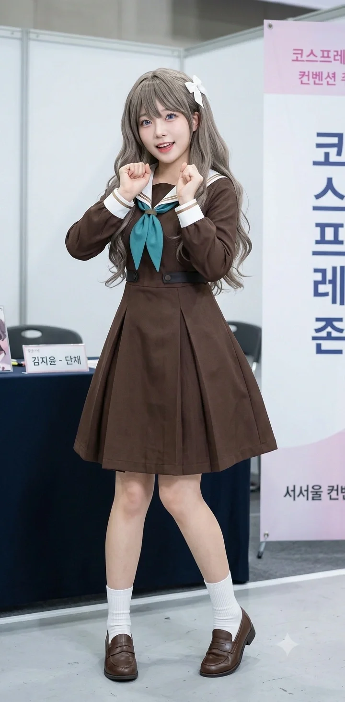
후지시마 메구미 그자체(...) 임은혜의 코스프레 촬영 장면.
은혜는 이 방송에서 메구미의 '하얀색 교복'과 '하얀색 스타킹'을 완벽하게 재현하며, 메구미의 오시력과 덕력을 유감없이 발휘했다.
아버지와 서먹하게 지내며 죄인처럼 지내던 2023년 2월, 은혜의 인생을 송두리째 바꿔놓은 운명적인 순간이 찾아왔다. 하스노소라 여학원 스쿨 아이돌 클럽의 후지시마 메구미가 전격 공개된 것이다.
은혜는 캐릭터를 보자마자 온몸에 소름이 돋았다.
첫째, 자신의 이름 '은혜'가 일본어로 '메구미(恵)'라는 점.
둘째, 자신의 생일(02월 21일)이 메구미의 생일(12월 20일) 숫자를 거울처럼 완벽하게 뒤집어 놓은 데칼코마니 대칭이라는 기적적인 논리였다. (가족들도 은혜의 이 미친 끼워 맞추기 억지 논리를 결국 인정해 주었다.)
운명을 직감한 은혜는 메구미 오시로 완전히 각성했고, 그동안의 끔찍했던 미안함과 죄책감을 떨쳐버리고 엉엉 울며 아버지의 방문을 열었다.
"아빠... 그동안 아빠한테 쓰레기라고 해서 진짜 진짜 죄송해요... 나 사실 메구미 오시였어... 나 메구미 네소베리랑 1/7 스케일 피규어 좀 사줘 ㅠㅠ"
눈시울이 붉어진 임세혁은 잇몸이 만개한 채 딸을 꽉 안아주며 "우리 딸내미, 드디어 참된 진리를 깨달았구나! 피규어가 문제냐, 아크릴 스탠드까지 박스째로 다 사주마!"라며 즉각 법인카드를 꺼내 주었다. 패륜(?)을 극복하고 2023년이 되어서야 비로소 은혜와 아버지의 눈물겨운 화해와 가문의 완벽한 대통합이 이루어졌다.
5. 해천대학교 진학과 '주워온 자식' 의혹
5.1. "공부는 싫지만 학식은 먹고 싶어!" (C등급 대학 진학기)
자신의 오시인 메구미가 "공부 같은 건 장래에 도움 안 되니까 상관없어"라며 학업에 담을 쌓았듯, 은혜 역시 공부를 극도로 싫어했다. 내신은 5~6등급을 전전하는 처참한 수준이었다.
부모님은 "어차피 아빠 상가 건물주로 먹고살 텐데 굳이 먼 대학에 갈 필요 있냐. 집안일이나 도와라"라며 대학 진학 자체를 만류했다. 하지만 은혜의 마인드는 확고했다.
"나중에 아빠 건물 물려받아서 편하게 먹고살 거긴 한데, 그래도 대학교 캠퍼스 낭만이랑 학식은 꼭 먹어보고 싶단 말이야!! 미팅도 해보고 싶고!! 무조건 대학 갈 거야!!"
부모님의 거센 반대에도 "집 가까운 게 최고야!"라고 억지를 부리며, 창전구 창전동과 안천구 이자동 경계(1호선 과남역 초역세권)에 위치하여 집(리에라몰)에서 아주 가까운 해천대학교에 원서를 넣었다. 해천대는 효빈시에서 명백히 C등급(하위권)으로 분류되는 대학이었고, 은혜는 그마저도 메구미보다는 아주 약간 쥐똥만큼 공부를 더 했던 덕분에(?) K-컬처예술대학 '미디어영상콘텐츠학과'에 문을 닫고 겨우겨우 턱걸이로 합격했다. 본인은 그저 집 가까운 곳에서 대학생 놀이(...)를 하며 인터넷 방송 전공을 살릴 생각에 몹시 들떠있다.
5.2. 천재 동생 임승민의 극딜과 토마리 오시 각성
금융통계학도 엘리트 출신인 아버지와 엽월대 의류산업학과를 우수한 성적으로 나온 어머니와 달리, 은혜의 처참한 지능(?)은 집안에서 늘 놀림거리였다. 특히 2009년생 남동생 임승민은 누나와 달리 머리가 비상하여 최상위권 전교 1등 성적을 유지하는 수재였다. (심지어 학창 시절 아버지보다도 공부를 훨씬 잘한다고 한다.)
동생 승민은 원래 누나처럼 혐덕 조기 교육을 받았으나, 어머니가 덕후로 각성하며 몰고 온 집안의 거대한 덕풍(?)에 휩쓸렸다. 승민은 특유의 철저한 논리와 계산적이고 효율을 중시하는 성격 탓에 오니츠카 토마리 오시로 완벽하게 각성했다. 그는 툭하면 식탁에서 누나를 논리적으로 조롱했다.
은혜는 동생의 차갑고 완벽한 팩트 폭격에 말문이 막혀 분해하며 "진짜 나 주워 온 자식인가..."라며 한때 진지하게 정체성에 혼란을 느끼기도 했다. [1]
5.3. 의혹 종결: "아, 렌을 닮은 엄마 유전이구나!"
하지만 은혜의 이 '주워 온 자식' 의혹은 어느 날 깔끔하게 해소되었다.
어머니 연월엽은 평소에는 완벽하고 기품 있는 사모님이었지만, 진성 '하즈키 렌 오시'로 각성한 이후 가끔씩 렌 특유의 심각한 기계치 짓이나 세상 물정 모르는 백치미 바보짓(?)을 똑같이 저지르는 기염을 토했다. 블루투스 이어폰 연결을 못 해서 딸에게 징징거리거나, 인터넷 밈을 전혀 이해 못 해 엉뚱한 대답을 하며 허당미를 남발하는 어머니를 보며 은혜는 무릎을 탁 쳤다. [2]
자신의 무식함(?)을 쿨하게 어머니의 렌 백치미 유전자 탓으로 돌려버린 은혜는, 이후로 당당하게(?) 학업을 던지고 인터넷 방송에 전념하게 되었다.
6. 외형, 취향, 그리고 인터넷 방송인 '은혜당'
6.1. 완벽한 메구미 코스프레 (HAF 찢은 사연) 및 물아일체 패널 인증
어머니의 우월한 유전자를 물려받아 외모가 굉장히 화려하고 예쁘며, 볼륨감 넘치는 글래머러스한 몸매를 자랑한다. 특히 메구미 특유의 투 사이드 업(반묶음) 헤어스타일을 찰떡같이 소화한다.
2023년 8월, 아버지가 적극 후원하는 효빈시 최대의 서브컬처 축제인 효빈 애니메이션 페스티벌(HAF)에 '후지시마 메구미' 코스프레를 하고 등판한 적이 있다. 아버지가 HAF의 주요 스폰서(리에라몰) 자격으로 VIP 패스를 끊어주어 아버지가 운전하는 벤츠를 타고 행사장 게이트에 화려하게 내린 것부터 시선을 끌었다.
의상 퀄리티도 압도적이었지만 무엇보다 행동거지 자체가 메구미와 완벽한 동기화를 이룬 것이 핵심이었다. HAF 행사장 곳곳(HSCO 및 효빈대 일대)을 돌아다니며 틱톡 라이브를 켜고 메구미 특유의 앙큼한 애교와 "도네이션 환영 큥~" 같은 바보 행동을 200% 재현해 내어, 수백 명의 오타쿠들에게 둘러싸여 플래시 세례를 받았다. 오타쿠들은 "진짜 하스노소라에서 튀어나온 102기생 폼 미쳤다", "싱크로율 찢었네 ㅋㅋㅋ"라며 폭발적인 호응을 보냈다.
최근에는 방구석(아니, 펜트하우스) 스튜디오에 실물 크기 메구미 공식 등신대 패널까지 아빠 법인카드로 시원하게 긁어다 모셔놓고 같이 인증샷을 남겼다. 종이 쪼가리(?)인 2D 패널 옆에 섰음에도 불구하고, 오히려 현실 3D인 은혜가 작화가 더 비현실적으로 화려해 보이는 기적의 '물아일체'를 보여주었다. 시청자들은 "누가 사람이고 누가 등신대인지 헷갈린다", "패널보다 본인이 더 메구미 같은데요 ㅋㅋㅋ"라며 어이없어하는 반응. 패널 앞에서 "내가 바로 현실 메구미다 큥!"을 외치며 뻔뻔하게 요염한 척을 하는 그녀의 모습은 은혜당 채널의 새로운 레전드 짤로 영구 박제되었다.
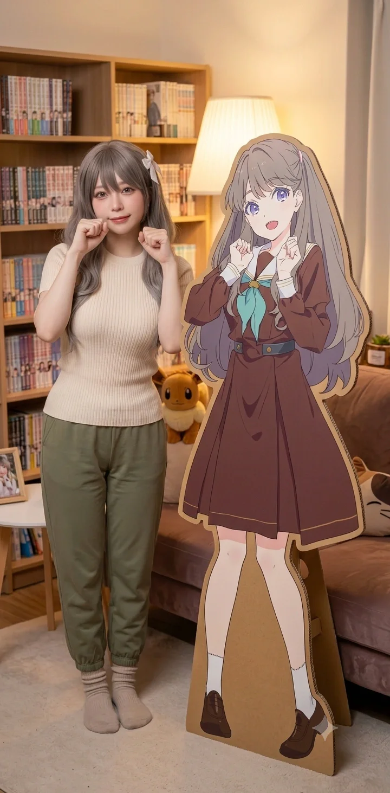
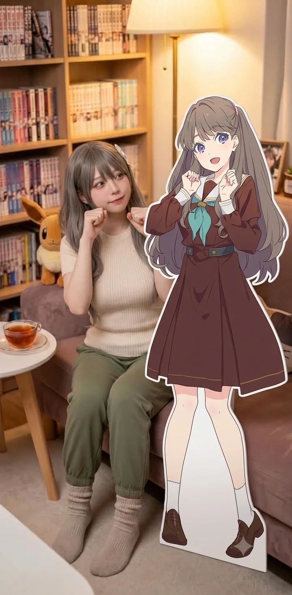
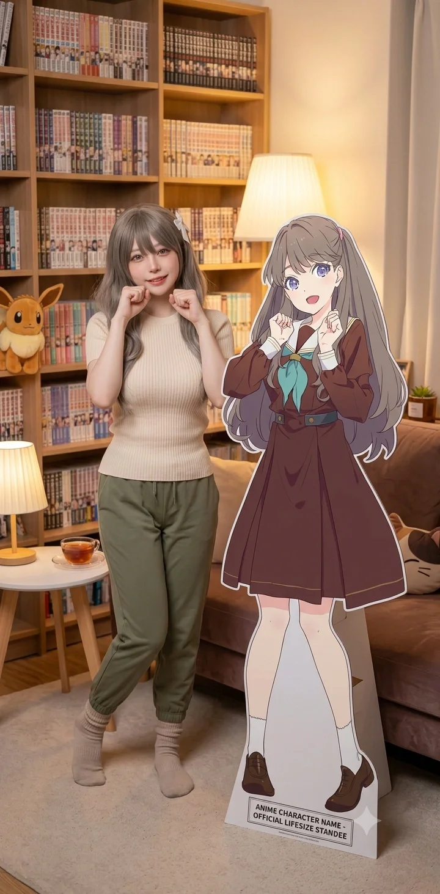
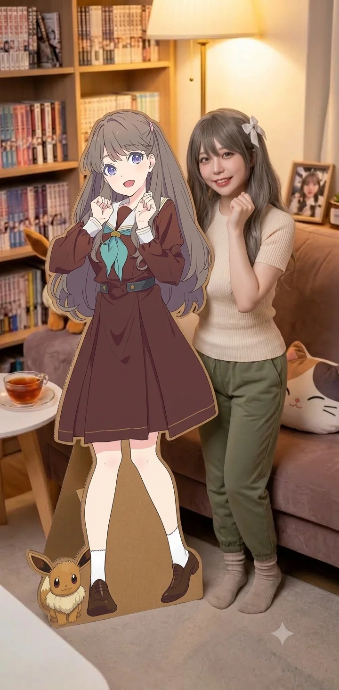
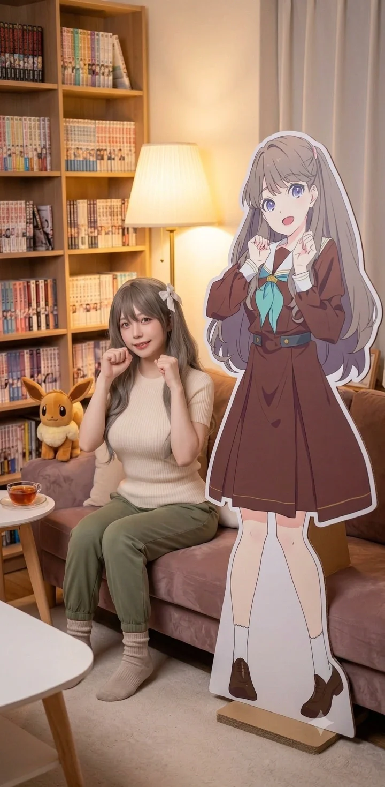
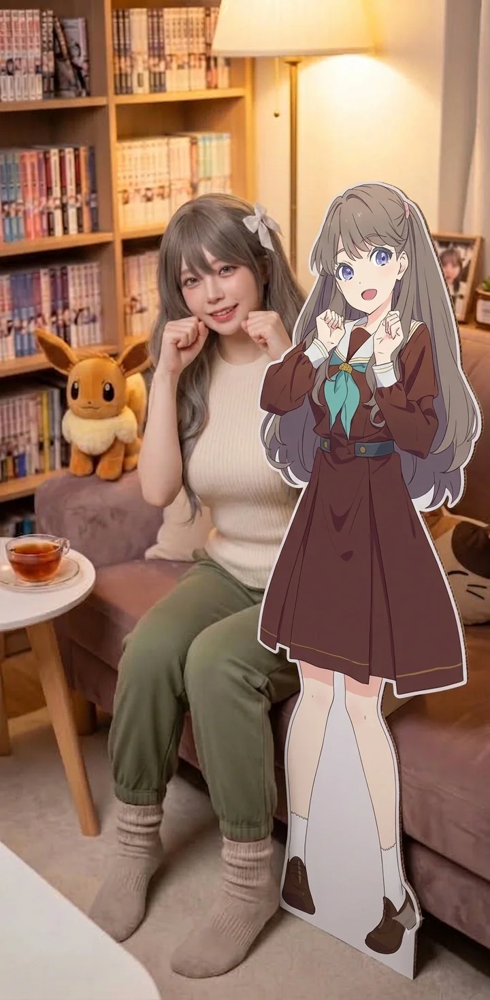
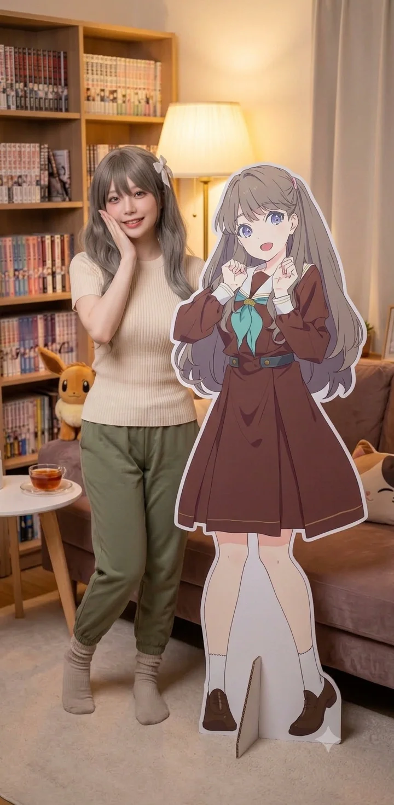
▲ "진짜와 가짜의 숨 막히는 대결! 승자는 아빠 카드로 긁은 갓물주 딸내미 큥💖"
6.2. 수석 스트리머의 탄생과 동업자 오낙희 (은혜당 x 엘튜버 환장의 콜라보)
해천대 진학 후, 은혜는 미디어학과 전공을 살려(?) 본격적인 유튜버 및 틱톡커 스트리머로 데뷔했다. 방송 채널명은 일명 '은혜당(党)'. (메구미가 자신의 팬들을 '메구당'이라 부르는 것을 완벽하게 오마주했다.)
방송 기획과 정산, 채널 관리는 철저하게 비즈니스 파트너이자 동급생인 오낙희(엘튜버 오니낫츠)가 도맡는다. 은혜가 카메라 앞에서 바보짓을 하며 어그로를 끌고 시청자를 홀리면, 낙희가 기가 막힌 썸네일과 편집으로 조회수를 펌핑하는 완벽한 분업 시스템이다. 시청자들은 이 둘을 두고 "전설의 메구미-나츠미 유닛(500엔 동맹)의 현실 강림"이라며 환호한다.
은혜: "여러분! 낙희 쨩이 이번 달 굿즈 협찬 들어온 거 지 혼자 70% 먹겠다고 계약서 사기 쳤어 큥!! 완전 양아치야!!"
낙희: (프레임 밖에서 마이크 뺏으며) "시끄럽다 데스노! 대가리가 텅텅 비어서 기획안 1장도 못 쓰는 멍청이 대신 내가 밤새워서 섭외하고 편집했으니 70%는 당연한 권리다!"
은혜: "내 미모가 다 하드캐리한 거거든?! 나 방송 안 해 큥! 파업이야!!"
낙희: "좋다 데스노. 그럼 지금 네가 방송에서 먹고 있는 최고급 한우 마라탕 세트 결제 취소하고 리에라몰 푸드코트로 압수하겠다 데스노."
은혜: "......6대 4 콜 큥."
이처럼 매월 정산일이나 합동 방송 때마다 카메라를 켜둔 채 머리채를 잡고 캣파이트를 벌이는 모습이 오히려 엄청난 도파민을 유발하며 은혜당 채널의 치트키 콘텐츠로 자리 잡았다. 오낙희가 은혜를 돈줄(?)로 철저히 굴려 먹으려 들면, 은혜는 낙희에게 벌칙으로 요상한 메이드복을 입히거나 아빠 찬스로 백화점 진상 손님 흉내를 내며 복수하는 환장의 케미를 뽐낸다.
6.3. 방송 환경 및 일주일 스케줄 (가짜 미디어학도의 삶)
[방송 세팅 및 환경]
은혜당의 주 방송 무대는 리에라몰 펜트하우스에 마련된 은혜의 개인 방이다. 방 전체가 핑크색 흡음재와 수백 개의 하스노소라/러브라이브 굿즈로 도배되어 있으며, 아버지가 사준 최고급 4K 웹캠과 슈어 마이크, 듀얼 모니터가 세팅되어 있다. 미디어학과 전공자지만 OBS 송출 오류가 나면 본인이 못 고치고 무조건 동생 임승민을 발로 차서 데려와 고치게 만든다.
- 월요일/수요일: 휴방 (명분: 대학 전공 수업 및 과제)
"나도 어엿한 미디어학도니까 공부해야 해 큥!"이라고 주장하지만, 실상은 늦잠을 자거나 과제를 동생 승민에게 짬처리하고 리에라몰을 배회하는 날이다. - 화요일/목요일 (오후 8시~): 종합 게임 & 애니메이션 심층 토크
머리를 써야 하는 퍼즐 게임이나 시각적 자극이 강한 공포 게임을 진행하거나, 서브컬처계의 뜨거운 감자를 가져와 시청자들과 씹덕(?) 토론을 벌이는 날. - 금요일 (오후 9시~): 자본주의 먹방 & 환장의 요리 교실
리에라몰 VIP 식당의 고급 음식을 배달시켜 먹거나, 본인이 직접 주방을 어지럽히며 기괴한 요리를 연성하는 날. - 주말 (랜덤 심야): 수면 방해 공작소 (ASMR) & 야외 틱톡 브이로그
주말 밤에는 잔잔한 ASMR을 시도하지만 높은 확률로 실패하며, 낮에는 오낙희와 함께 효빈시 핫플(주로 성지)을 돌아다니며 댄스 챌린지를 찍는다.
6.4. '은혜당' 7대 킬러 콘텐츠 상세 소개
은혜당 채널을 치지직·유튜브 통합 구독자 80만 명의 대형 채널로 견인한 7대 킬러 콘텐츠는 다음과 같다.
- 한자 못 읽는 바보 먹방 (국어 9등급의 실체):
메구미가 한자에 쥐약이듯, 은혜 역시 학업을 완전히 던진 탓에 심각한 어휘력을 자랑한다. 시청자들이 이를 노리고 어려운 사자성어나 복잡한 한자를 섞어서 1만 원짜리 슈퍼챗을 쏘면, 그걸 읽으려고 뇌가 정지되어 눈을 굴리며 버퍼링에 걸리는 모습이 압권이다. "어... 개세... 아니 개세지재(蓋世之才)?! 아 씨 무슨 소리야 킹받네 큥!!" 하며 성질을 내면 시청자들은 "지능 수준 진짜 메구미네 ㅋㅋ", "이게 현실 고증이지"라며 통쾌해하며 도네를 더 쏜다. - 뇌 정지 게임 방송 (지능 처참 스트리머의 한계):
유행하는 스팀 게임, 특히 퍼즐이나 방탈출 게임을 할 때 은혜의 진가(?)가 발휘된다. 초등학생도 푸는 튜토리얼 퍼즐 구간에서 30분 넘게 갇혀서 "이거 버그 아니야 큥?! 억까 지리네!!"라고 우기다가 시청자들에게 훈수를 맞고 조리돌림 당하는 게 일상이다.
공포 게임(아웃라스트, 프레디 등)을 할 때는 "꺄아아아아악 큥!!!!" 하는 고막 파괴 돌고래 비명을 지르며 의자에서 굴러떨어지는데, 오낙희가 이 장면만 기가 막히게 쇼츠로 잘라내어 유튜브 조회수를 달달하게 빨아먹는다. - 환장의 요리 방송 (지옥에서 온 쿠킹 클래스):
"오늘은 메구미 쨩처럼 큐트하고 러블리한 도시락을 만들어볼게요 큥!"이라며 야심 차게 시작하지만, 결과물은 항상 모자이크 처리가 시급한 암흑 물질(다크매터)이 된다. 툭하면 인덕션을 태워 먹어 화재경보기를 울리게 만들고, 결국 방송을 보다 빡쳐서 난입한 '핑크색 프릴 앞치마' 차림의 남동생 임승민(과고 전교 1등, 은혜의 노예)이 국자를 뺏어 들고 요리를 심폐소생술 하는 모습이 하이라이트. 시청자들은 은혜가 만든 요리엔 "방사능 폐기물", 동생이 수습한 요리엔 "미슐랭 3스타"라며 극찬을 아끼지 않는다. - 심야의 ASMR (수면 방해 공작소):
"여러분~ 오늘 하루도 수고 많았어요 큥... 코야코야 잘 자요..."라며 값비싼 3D 마이크 앞에서 꿀 떨어지는 목소리로 ASMR을 시도한다. 하지만 은혜의 주체할 수 없는 하이텐션과 허당끼 때문에 제대로 끝나는 날이 없다.
결정적인 타이밍에 배에서 "꼬르르르륵!!!" 하는 거대한 마찰음이 마이크를 타고 송출되거나, 몰입하다가 마이크를 입술로 세게 박치기해버리는 대참사가 일어난다. 가끔은 옆방에서 막내동생 시연이가 "애애앵!!" 하고 우는 소리가 오디오에 섞여 들어와 졸지에 '육아 ASMR'로 장르가 변경되며 시청자들의 수면을 완벽하게 박살 내버린다. - 씹덕 풀악셀 애니 토크 (메구미 종교 집회):
신작 애니메이션이나 하스노소라 관련 중대 발표가 있는 날 진행하는 심층 토크 방송. 이 날만큼은 바보 은혜가 아니라 '진성 씹덕 스트리머' 모드로 돌변한다. 방에 쟁여둔 수백 개의 메구미 한정판 굿즈를 제단처럼 쌓아놓고 광신도적인 애정을 뽐낸다.
만약 시청자가 채팅으로 "메구미 혐성 아님?" 같은 도발을 시전하면 즉각 극대노하여 "어디서 감히 우리 천사 메구미 쨩한테 혐성 프레임을 씌워 큥!! 너 강퇴야!! 우리 메구미 쨩의 헌신적인 서사를 모르는 겜안분 새끼들은 방송 보지 마 큥!!"이라며 불을 뿜는다. 스토리에 과몰입해 질질 짜면서 휴지로 눈물을 닦는 모습이 킬포인트. - 리에라몰 크레페 알바 V-Log (점장 딸의 갑질?):
자칭 '크레페 장인'이라며 리에라몰 지하 1층 디저트 코너에서 알바를 하는 브이로그. 하지만 실상은 크레페 반죽을 다 태워 먹거나, 자기 크레페에만 생딸기를 3배로 넣다가 뒤에서 순찰 돌던 점장(아빠 임세혁)에게 등짝을 맞고 쫓겨나는 리얼 시트콤이다. "딸한테 너무 깐깐한 거 아니야 큥?!" 하며 징징대는 모습이 조회수 치트키. - 등도사회복지재단 성지순례 댄스 챌린지:
자신의 운명적 본진(?)인 '등도사회복지재단' 건물 앞이나 복지관 로비에서 뜬금없이 하스노소라 안무를 추는 숏폼. 뻔뻔할 정도로 하이텐션인 그녀 뒤로 어리둥절하게 쳐다보는 동리동 할아버지, 할머니들의 찐 반응이 교차되며 폭발적인 웃음을 자아낸다. (최근엔 재단 이사장마저 은혜의 방송을 홍보 수단으로 생각하고 아예 레드카펫을 깔아준다고 한다.)
6.5. 가족 출연진과 최종병기 '임시연' (조회수 폭발의 치트키)
은혜당 채널의 또 다른 인기 요인은 리에라몰 일가족들의 적나라한(?) 난입과 리얼리티다.
- 아버지 임세혁 (점장님): 방송 중에 갑자기 문을 열고 들어와 "야 임은혜! 내 법인카드 네가 가져갔지?!"라며 사자후를 치는 기믹으로 자주 등장한다. 하지만 시청자들이 "점장님 충성충성!" 하며 도네를 쏘면 슬며시 입꼬리가 올라가며 "방송 열심히 해라" 하고 문을 닫아주는 츤데레 갓물주다.
- 어머니 연월엽 (사모님): 간혹 우아한 홈웨어 차림으로 커피를 가져다주러 들어왔다가, 블루투스 이어폰 연결을 해달라며 앵글 안에서 버벅대는 '렌 붕어빵 허당미'를 과시한다.
- 남동생 임승민 (방송국 노예 1호):
은혜에게 치명적인 직캠 약점을 잡혀노예 계약을 맺은 탓에 강제로 카메라 세팅, 조명 조절, OBS 송출을 담당하는 테크니컬 스태프로 굴려진다. 앵글 구석에서 "아 진짜 개비효율적이네..."라며 깊은 한숨을 쉬는 과고 전교 1등의 처량한 모습이 시청자들에게 묘한 카타르시스(?)를 선사한다.
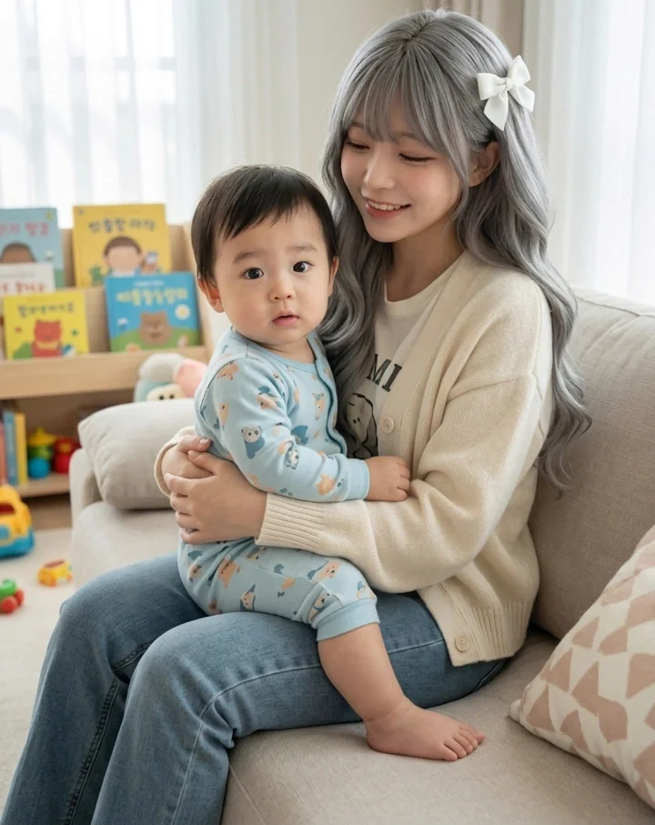
머리채를 쥐어뜯기면서도 자본주의(도네이션)의 힘으로 가식적인 미소를 유지하는 큥눈나와
해맑게 굿즈를 파괴 중인 최종병기 애기천사.
그리고 이 모든 콘텐츠를 씹어먹는 은혜당 채널의 '최종 병기'이자 절대 존엄은 바로 2023년생 막내동생 '임시연'이다.
가끔 부모님이 외출해 은혜가 육아를 전담해야 하는 날, 은혜는 아예 시연이를 무릎에 앉혀놓고 '육아 V-log'를 핑계 삼아 라이브를 켠다. 화면에 볼살이 포동포동한 아기 천사 시연이가 등장하는 순간, 은혜당의 트래픽은 평소의 3배 이상 폭발하며 채팅창은 "시연아 ㅠㅠㅠㅠ!!", "우리 애기 까까 사먹어라!!"라며 시청자들의 지갑이 열리는 '도네이션 대폭주' 사태가 벌어진다.
압권인 것은 시연이가 방송 중에 은혜의 생명과도 같은 '투 사이드 업(트윈테일)' 머리채를 사정없이 쥐어뜯거나, 뒤에 장식된 비싼 한정판 굿즈를 입에 넣고 물어뜯는 만행(?)을 저지를 때다. 평소 같으면 괴성을 질렀을 은혜지만, 수만 명이 시청 중인 앵글 앞이기에 "아하하하... 시연아 그거 먹는 거 아니야 큥...^^ (이 악물)"이라며 자본주의 미소로 고통을 참아내는 모습은 시청자들을 포복절도하게 만든다. 은혜는 뒤에서 "조회수 달달하다 데스노!"를 외치는 오낙희와 함께, 시연이를 "은혜당 최고의 치트키이자 황금 거위"로 모시며 아주 알뜰하게 방송에 써먹고 있다.
7. 주요 일화 및 사건사고
7.1. 2025년 10월 츠키네 코나 내한 팬미팅: 현실판 메구미 강림과 남도형 MC의 진땀
2025년 10월 18일 성암아트홀에서 열린 후지시마 메구미의 본체, 츠키네 코나(코나치)의 첫 단독 내한 팬미팅은 임은혜의 덕질 인생에 종지부를 찍은 완벽한 성불의 날이다. 이날 은혜는 방송용으로만 입던 고퀄리티 메구미 코스프레 의상(완벽한 트윈테일과 헤어 액세서리 포함)을 풀장착하고 행사장에 나타나 수많은 한국 물붕이들의 시선을 강탈했다. "내가 바로 리에라몰의 딸이자 현실 메구미다 큥!"이라며 무대 바로 앞 최전열 정중앙 좌석을 사수했다. 그녀의 자본력과 오시력이 융합된 완벽한 전투 준비였다.
공연이 시작되고 무대 위로 츠키네 코나가 등장해 객석을 향해 환한 인사를 건네던 순간, 엄청난 사건이 터졌다. 코나치의 시선이 1열 한가운데에 앉아있는 자신의 담당 캐릭터 '후지시마 메구미'를 3D 현실로 그대로 찢고 나온 듯한 미모의 소녀(임은혜)에게 고정된 것이다! 코나치는 너무 놀라 들고 있던 마이크를 꽉 쥐며 "에엣...?! 멧구... 멧구미 쨩...?!"이라며 대놓고 찐텐으로 엄청난 동공 지진 리액션을 보였다. 165cm의 글래머러스하고 화려한 비주얼에 완벽한 코스프레를 한 은혜를 본 코나치는, 무대 위에서 시선을 어디에 두어야 할지 몰라 한동안 은혜만 빤히 쳐다보는 진풍경을 연출했다. 은혜는 그 시선을 만끽하며 당당하게 메구미의 시그니처 윙크를 날려주었다.
코나치가 '현실판 메구미'인 임은혜의 존재에 너무 시선을 빼앗긴 나머지, 이날 팬미팅은 MC를 맡은 남도형 성우에게 그야말로 '극한 직업'이 되고 말았다. 코나치가 토크 코너나 게임 코너 중에도 자꾸 1열의 은혜 쪽을 흘끔거리며 넋을 놓는 바람에 타이밍을 놓치고 대본 흐름이 끊기기 일쑤였던 것이다. 당황한 남도형 MC가 특유의 텐션으로 "코, 코나치 상! 지금 어디를 그렇게 뚫어져라 보시는 건가요?! 진행하셔야죠 하하하!"라며 필사적으로 포장지를 덮고 멘트를 수습하며 방송을 캐리해야만 했다. 시청자들과 현장 팬들은 남도형의 피나는 노력에 박수를 보내면서도, 코나치를 넋 나가게 만든 1열의 '메구미 코스어'에게 감탄을 금치 못했다.
이날 대성불의 마침표는 행사 직후 이어진 배웅회(오미오쿠리)에서 찍혔다. 대기열을 지나 가림막 안으로 들어선 은혜는, 방금 전 무대 위에서 자신을 넋 놓고 바라보던 코나치와 코앞에서 1대1로 다시 마주했다. 코나치는 은혜를 보자마자 두 손을 맞잡고 "와아! 진짜 현실 메구미 쨩 같아요! 너무 예뻐요, 카와이~!!"라며 진심 어린 칭찬을 쏟아내 주었다. 늘 카메라 앞에서 뻔뻔한 텐션을 유지하던 은혜였지만, 자신의 영원한 오시에게 직접 코스프레와 애정을 인정받은 순간 그동안 참아왔던 감정이 둑 터지듯 터져버렸다. 은혜는 코나치 앞에서 "코나치 사마... 저 진짜 메구미 쨩 덕분에 인생이 바뀌었어요... 정말 감사해요 큥... 흐엉엉 ㅠㅠㅠ"이라며 폭풍 오열을 하고 말았다. 이 극적인 만남을 끝으로 임은혜는 덕질 인생의 한 점 미련도 없는 완벽한 궁극의 성불을 이뤄냈다.
7.2. 2025년 12월 Liella! 5인 내한 대성불 사건 (feat. 리에하스 총출동)
2025년 12월 6일 일산 킨텍스 AGF 메가 스테이지에 Liella! 5인방(다테 사유리, 아오야마 나기사, 야부시마 아카네, 오오쿠마 와카나, 유이나)이 내한한다는 소식이 전해졌다. 하지만 이번 내한 라인업에 은혜의 본진인 '츠키네 코나(메구미 성우)'는 포함되어 있지 않았다. 그럼에도 불구하고 은혜는 "이 몸은 이미 10월에 코나치 님을 영접하고 성불을 끝마친 진정한 내한 선배다 큥!"이라며 무한한 거드럭거림(?)을 시전했다. 그녀는 리에하스 연합의 동지들인 엄마 연월엽(렌 사모님), 시화음(카논 엄마), 가노은(카논 딸), 마루빈(마르가레테), 완시윤(시키), 이미녀(메이)를 몽땅 긁어모아 역대급 '도플갱어 원정대'를 결성했다. 리에라몰 사모님의 자본력으로 렌트한 최고급 밴 안에서 은혜는 "다들 잘 들어 큥! 성우님이랑 눈 마주치면 부끄러워하지 말고 냅다 시그니처 포즈를 해야 인지받을 수 있어! 내가 일타강사야!"라며 훈수를 두어 마루빈의 "이미와칸나이!"와 이미녀의 "우루사이!"를 동시에 유발하는 환장의 케미를 뽐냈다.
어머니 연월엽의 재력(VIP 예매)과 완시윤의 파이썬 매크로가 결합된 힘으로 무대 앞 1열 한가운데 꿀자리를 싹쓸이한 리에하스 연합. 이윽고 무대 위로 Liella! 5인방이 등장했고, 밝게 웃으며 객석을 스캔하던 성우들의 시선이 1열에 꽂히는 순간 단체로 걸음걸이가 멈칫하며 엄청난 뇌정지와 렉이 걸려버렸다. 무대 바로 아래에 현실로 튀어나온 시부야 카논(가노은), 성숙한 30대 카논(시화음), 고품격 하즈키 렌(연월엽), 아이스 그린 가운의 와카나 시키(완시윤), 8분음표 똥머리의 요네메 메이(이미녀), 고딕 드레스의 빈 마르가레테(마루빈), 그리고 시선 강탈의 메구미(임은혜)가 일렬로 나란히 서서 각자의 야광봉을 맹렬히 흔들고 있었던 것이다. 성우들은 이 비현실적이고 기괴할 정도로 완벽한 싱크로율의 '도플갱어 군단'을 보고 너무 놀라 입을 떡 벌리고 서로를 쳐다보며 현실을 부정하는 듯한 리액션을 보였다.
가장 극적인 리액션의 첫 타자는 시부야 카논 역의 다테 사유리(사유링)였다. 무대 위에서 자신과 똑 닮은 가노은과, 10년 뒤 성숙해진 버전 같은 시화음 모녀를 동시에 마주친 사유링은 충격을 감추지 못했다. 사유링은 입을 앙 다물고 두 눈을 동그랗게 뜨는 전매특허 '( • 8 • )' 참새 표정을 무려 3초간 지으며 동공 지진을 일으켰다. 이 전설적인 리액션을 눈앞에서 직관한 가노은과 시화음은 서로를 부둥켜안고 "엄마!! 사유링이 우리 보고 찐으로 참새 표정 지었어!!"라며 감격의 눈물을 쏟아냈다. 은혜는 이 순간을 스마트폰 4K 화질로 야무지게 녹화하며 "가노은 완전 계 탔네 큥 ㅋㅋㅋ"이라며 자신의 일처럼 즐거워했다.
그다음 타깃은 와카나 시키 역의 오오쿠마 와카나였다. 그녀의 시선은 1열에서 백의 가운을 입고 500nm 파장의 특수 '아이스 그린' 개조 블레이드를 든 채 무표정하게 서 있는 완시윤에게 꽂혔다. 자신의 캐릭터를 세포 단위로 복제해 놓은 듯한 시윤의 서늘한 포스에 오오쿠마 와카나는 마이크를 들고 헉! 하며 입을 벌렸다. 성우가 대놓고 경악하는 걸 보면서도 완시윤은 안경을 스윽 치켜올리며 "오오쿠마 와카나의 동공 확장률 140% 증가. 시신경이 완벽하게 내게 압도당했군. 유의미한 관찰 결과야."라며 소름 돋는 매드 사이언티스트 반응을 보였다. 이를 본 은혜는 "아 진짜 완시윤 시키 빙의 폼 미쳤다 큥 ㅋㅋㅋ"이라며 배를 잡고 폭소했다.
이날 대성불의 또 다른 하이라이트는 빈 마르가레테 역의 유이나(Yuina)와 마루빈의 눈맞춤이었다. 유이나가 우아한 퍼플 드레스의 마루빈을 보고 환하게 웃으며 최고의 양손 하트와 윙크를 날려주자, 평소 "이미와칸나이!"를 입에 달고 살던 츤데레 마루빈의 멘탈이 완벽하게 무너져 내렸다. 루빈은 츤데레 가면을 훌렁 벗어던지고 가노은의 품에 안겨 "엉엉... 유이나 사마가 나한테 하트 해줬어... 내 존재가 증명됐어... 흑흑..."이라며 어린아이처럼 펑펑 울음을 터뜨렸다. 은혜는 이 절호의 기회를 놓치지 않고 루빈이 콧물을 흘리며 오열하는 모습을 무자비하게 4K 직캠으로 녹화했다. "루빈 쨩! 나중에 리에라몰 뷔페 안 쏘면 이거 당장 쇼츠로 박제해 버릴 거야 큥!"이라며 악질적인 자본주의 협박을 시전하는 은혜의 광기에 루빈은 울면서도 주먹을 쥐어야 했다.
하즈키 렌 역의 아오야마 나기사(청산씨) 역시 1열에서 뿜어져 나오는 압도적인 귀부인의 아우라를 피할 수 없었다. 완벽한 네이비톤 드레스와 기품 있는 자태로 펜라이트를 흔드는 리에라몰 사모님 연월엽을 본 나기사는 눈을 둥그렇게 뜨고 놀라움을 감추지 못했다. 우아한 아나운서 미모 뒤에 숨겨진 4차원 텐션을 지닌 나기사처럼, 월엽 역시 기품 있는 미소를 짓다가도 무대 퍼포먼스에 맞춰 "나기사 님!! 너무 고귀하십니다!!"라며 갑자기 블레이드를 쌍검술(?)처럼 휘두르는 미친 갭모에를 선보였다. 엄마의 폭주를 직관한 은혜는 "엄마 집에서 넷째 볼 때 그 푼수 텐션 여기서 다 나오네 큥 ㅋㅋㅋ"이라며 팩폭을 날렸고, 월엽은 은혜의 등짝을 부채로 후려치면서도 시선을 무대에 고정하는 훌륭한 덕력을 뽐냈다.
비록 자신의 본체인 츠키네 코나는 이 자리에 없었지만, 은혜는 전혀 주눅 들지 않았다. 오히려 "우리 메구미 쨩의 몫까지 내가 1열에서 존재감을 뽐내주겠어 큥!"이라며 가장 화려한 리액션으로 다른 멤버들의 시선을 독차지했다. 공연이 끝난 뒤, 은혜는 펜트하우스 스튜디오로 멤버들을 모두 끌고 가 곧바로 '은혜당! 성우님들 단체 뇌정지시킨 썰 푼다 큥!'이라는 제목으로 라이브 방송을 켰다. 무대 위 성우들의 리얼한 경악 표정을 썰로 풀자 시청자들은 열광하며 트래픽이 폭발했다. 방송 도중 어머니 연월엽이 아빠의 법인카드로 싹쓸이해 온 100박스 분량의 Liella! 한정판 굿즈를 끌고 들어오며 졸지에 '재벌집 언박싱 방송'으로 장르가 바뀌었고, 도네이션 서버가 다운될 뻔한 전설의 뒤풀이를 완성했다.
8. 인물 관계: 환장의 동세대 유니버스 (지인편)
8.1. 가노은: 최악의 악연에서 영혼 단짝으로 (소속사 메타)
중학교 3학년 시절, 이른바 '줌(Zoom) 링크 대참사' 당시 은혜가 오타쿠를 병균 취급하며 폭언을 쏟아낼 때, 유일하게 정면으로 맞서서 사자후를 날린 인물이 바로 가노은(시화음의 딸, 시부야 카논 오시)이었다.
당시에는 서로 원수처럼 지냈으나, 은혜가 메구미로 각성한 이후 노은을 찾아가 눈물 콧물을 쏟으며 도게자를 박은 것을 계기로 완벽하게 화해했다. 재미있는 점은 메구미의 성우(츠키네 코나)와 카논의 성우(다테 사유리)가 현실 소속사(Apollo Bay)에서 엄청난 절친인 것처럼, 은혜와 노은 역시 마치 '소속사 메타'를 타듯 눈이 맞아 엄청난 단짝이 되어버렸다는 사실이다. 노은은 툭하면 은혜의 틱톡 라이브에 고정 게스트 수준으로 출연해 노래를 불러주며 방송의 퀄리티와 조회수를 멱살 잡고 캐리하고 있다.
8.2. 마루빈: 츤데레를 녹이는 껌딱지 애교 (유통 재벌 연합)
당가고등학교에서 만난 마루빈(빈스마트 상속녀, 빈 마르가레테 오시)과는, 입학 초기만 해도 둘 다 '독고다이 혐덕'이라는 공통점으로 뭉쳤던 살벌한 조합이었다. 하지만 루빈이 은혜보다 먼저 마르가레테에 감화되어 혐덕을 탈주(?)했고, 훗날 "남의 눈치 보지 마! 네가 널 증명하면 돼!"라며 은혜가 혐덕의 굴레에서 벗어나는 데 결정적인 용기를 심어주었다.
현재는 리에라몰과 빈스마트의 '초지관철 X 리에라 멤버십' 통합 동맹을 이끄는 든든한 유통 재벌 2세 파트너다. 사적으로는 통통 튀는 은혜가 "루빈 쨩 큥~💖" 하며 스킨십을 시도하고 달라붙을 때마다, 루빈이 특유의 서늘한 표정으로 "이미와칸나이! 징그럽게 왜 이래!"라고 질색하며 도망치는 그림이 자주 연출된다. 하지만 막상 은혜가 틱톡 챌린지 춤을 춰 달라고 부탁하면 군말 없이 완벽한 칼군무를 선보이는 환장의 츤데레 케미를 자랑한다.
8.3. 가희나: 캠퍼스의 장난감(?) 및 해천대 단짝
가노은의 쌍둥이 동생인 가희나(사쿠라코지 키나코 오시)와는 중학교 시절부터의 끈끈한 인연을 자랑한다. 줌 링크 대참사 당시, 기가 약하고 소심했던 희나가 덜덜 떨면서도 은혜의 막말을 막아서며 선배들을 지켰던 사건을 은혜는 아직도 미안하게 생각하며 가슴에 새기고 있다.
현재는 같은 해천대학교에 재학 중(은혜는 미디어학과, 희나는 간호학과)이라 캠퍼스 내에서 둘도 없는 단짝으로 붙어 다닌다. 은혜가 특유의 하이텐션으로 "희나 쨩 큥~ 떡볶이 먹으러 가자!"라며 끌고 다니면, 희나는 "은혜 쨩... 걸음이 너무 빠름다 헥헥..." 하면서도 군말 없이 잘 따라다닌다. 종종 간호학과 실습복(스크럽)을 입은 희나를 데리고 해천대 앞 분식집에서 방송을 켜는 것이 은혜당 채널의 주요 일상 콘텐츠 중 하나다.
8.4. 오낙희 & 오마리 자매: 혐덕 시절 대참사와 복수전
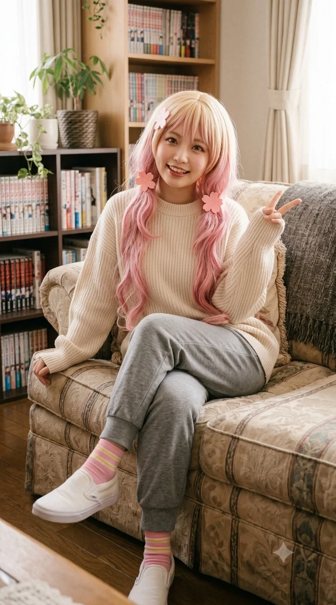
비즈니스 파트너이자 동업자 '오낙희'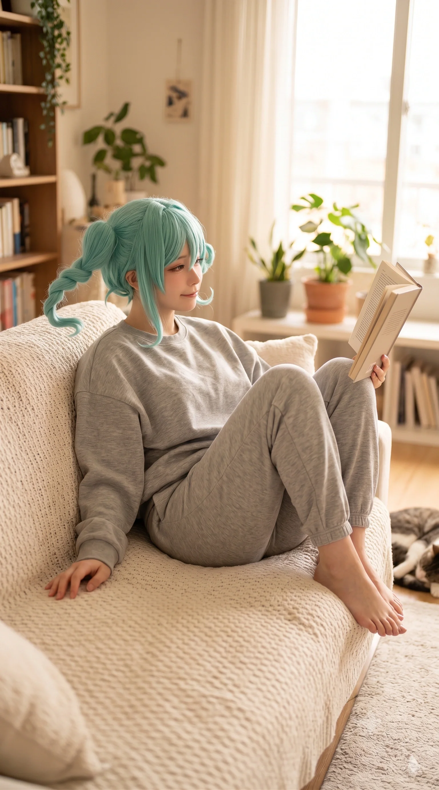
은혜의 애착 인형(?)이자 승민의 짝사랑 '오마리'당가고등학교 시절부터 알고 지낸 오낙희(오니츠카 나츠미 오시, 2006년생 동급생)와 오마리(오니츠카 토마리 오시, 2007년생 후배) 자매와의 관계도 빼놓을 수 없다. 원작에서 나츠미와 메구미가 서로 선후배 사이인 것과 달리, 효빈광역시에서는 완벽한 고증(?)을 거쳐 은혜와 낙희가 2006년생 동급생으로, 마리가 2007년생 후배로 재탄생했다.
은혜가 지독한 혐덕이던 고등학교 시절, 이미 '엘튜버(L-Tuber)'를 자처하며 학교 복도에서 방송을 찍고 돈을 밝히던 오낙희와, 이를 차갑고 논리적으로 팩트 폭격하던 동생 오마리는 은혜의 눈에 그저 "시끄럽고 징그러운 오타쿠 자매"로 보였다.
어느 날 은혜는 복도에서 틱톡을 찍으며 길을 막던 낙희에게 "야, 너네 진짜 징그럽고 더러우니까 카메라 치우고 비켜!"라며 대놓고 막말을 쏟아부었다. 이에 낙희가 돈벌이(?)가 끊길까 봐 억울해서 울상을 짓자, 옆에 있던 동생 마리가 싸늘한 표정으로 은혜를 올려다보며 특유의 존댓말 팩트 폭격을 날렸다.
이 숨 막히는 마리의 팩트 폭격에 당시 은혜는 얼굴이 시뻘게진 채 분해하며 "뭐 이딴 재수 없는 자매가 다 있어?!"라며 씩씩거렸고, 이것이 오니츠카 자매와의 첫 최악의 갈등이었다.
하지만 은혜가 2023년 메구미 오시로 대각성하고 본인 역시 스트리머 '은혜당'으로 데뷔하면서 상황은 180도 역전되었다. 은혜는 낙희를 찾아가 과거의 폭언을 무릎 꿇고 사과했고, 현재는 앞서 서술한 대로 수익 배분을 놓고 싸우면서도 절대 떨어지지 않는 환장의 비즈니스 파트너 겸 찐친으로 지내고 있다.
무엇보다 압권인 초점은 후배 오마리를 대하는 은혜의 태도다. 특유의 높은 텐션으로 귀여운 소녀들을 좋아하는 은혜(메구미 오시)의 취향에, 차갑고 논리적이면서도 묘하게 귀여운 새우튀김 머리의 마리가 완벽하게 스트라이크존을 뚫어버린 것. 은혜는 마리만 보면 눈에서 하트가 쏟아지며 "우리 마리 쨩 큥~💖 너무 귀여워! 언니가 까까 사줄까?!"라며 아주 좋아 죽는 시늉을 하며 달려든다. 마리는 매번 "은혜 선배님, 무의미한 스킨십은 몹시 비효율적이며 불쾌합니다. 당장 떨어지십시오"라며 철벽을 치고 방송 트래픽 데이터나 분석하고 있지만, 은혜는 아랑곳하지 않고 마리의 양갈래 머리를 만지작거리며 끈질기게 덕질(?)을 멈추지 않는다.
8.5. Aqours 오시 어벤져스: 생명의 은인이자 우상
은혜가 과거 뒷골목에서 일진 무리에게 둘러싸여 강제 추행과 협박을 당할 뻔했을 때, 바람처럼 나타나 일진들을 물리적·법적으로 박살 내고 그녀를 구출해 준 'Aqours 오시 어벤져스' (고해영, 도선요, 송과영, 이리자, 석다연)는 은혜에게 그야말로 '생명의 은인'이자 거의 종교적 우상에 가깝다.
이들을 구세주로 떠받드는 은혜는 아빠(임세혁)의 리에라몰 점장 빽을 풀가동하여, 어벤져스 멤버들이 매장에 나타날 때마다 최고급 한우 세트, 디저트, VIP 할인권을 쉴 새 없이 조공으로 바친다. 특히 자신과 같은 해천대학교 선배인 고해영(치카 오시)이나 송과영(카난 오시)을 마주칠 때면 "언니들 큥!! 제가 밥 쏠게요!"라며 껌딱지처럼 달라붙는다. 어벤져스 멤버들도 은혜 특유의 텐션과 재력을 나쁘지 않게 생각하며, 은혜를 '자본주의 스폰서 겸 귀여운 후배'로 각별히 챙기고 있다.
8.6. 석루비: 영혼의 비즈니스 파트너이자 교두보
어벤져스의 군기반장 석다연의 친동생이자, 의류산업학도인 석루비와는 더욱 특별한 비즈니스 파트너 관계를 맺고 있다. 은혜가 인터넷 방송(스트리머) 활동을 본격적으로 시작하면서 고퀄리티 코스프레 의상이 필요해졌고, 어벤져스의 구출 사건을 계기로 안면을 튼 루비의 '천재적인 재봉 및 의상 제작 능력'을 알게 된 것이다.
은혜는 즉시 루비를 자신의 공식 방송용 의상 전담 제작자(스타일리스트)로 영입했다. 은혜가 방송에서 입을 신상 제복이나 화려한 드레스가 필요할 때마다, 루비는 밤을 새워 현역 디자이너 뺨치는 완벽한 핏의 의상을 뽑아내어 바친다. 그 대가로 은혜는 루비에게 리에라몰 4층 푸드코트의 최고급 마라탕 4단계와 값비싼 아이스크림 디저트를 무한 스폰서로 제공한다. 은혜 입장에서는 생명의 은인(다연)의 동생이자, 자신의 방송 비주얼을 하드캐리하는 루비를 떠받들 수밖에 없다. 이로써 은혜(리에하스 연합)와 루비(아쿠아-무지개)는 자본주의와 의리로 얽힌 완벽한 3대 세력의 교두보를 형성하게 되었다.
8.7. 김시연: 무지개 동호회의 합법 얀데레와의 은밀한 사이버 동맹
석루비를 통해 자연스럽게 건너건너 알게 된 김시연(무지개 동호회의 실세, 아유무 오시)과는 은밀하고 무서운(?) '사이버-자본 동맹' 관계다. 김시연의 무시무시한 정보력(사이버 국정원장급 해킹 및 IP 추적 능력)과 임은혜의 인터넷 방송 여론 선동력, 그리고 리에라몰의 자본력이 결합하면 그 어떤 혐오 세력도 살아남을 수 없다.
실제로 은혜 주변에서 악플러나 쓰레기 일진 잔당이 설치면, 은혜가 시연에게 SOS를 친다. 시연이 뒤에서 조용히 타겟의 과거 행적과 불법 녹취(?) 데이터를 완벽하게 털어 넘겨주면, 은혜가 리에라몰 스폰서 파워를 이용해 그들의 알바 자리를 폭파시키거나 인터넷 방송으로 조리돌림하여 여론을 박살 내는 식의 '합동 사형 선고' 콤비 플레이를 보여준다. 은혜는 시연의 그 서늘한 얀데레 죽은 눈을 볼 때마다 "저 언니 진짜 무서워 큥..." 하면서도 절대적인 아군임을 알기에 깍듯이 모시고 있다.
9. 환장의 가족 관계 (리에라몰 일가)

은발 머리를 하고 아기를 안고 있는 은혜(가운데)를 중심으로 모인 가족들. 혐덕 시절의 흑역사를 청산하고 완벽한 덕후 가족으로 거듭난 화목하고 기적적인 대통합의 현장이다.
과거의 혐덕 교육으로 가족을 찢어놓을 뻔했던 장본인이자 피해자에서, 현재는 가문의 자본력과 오타쿠 문화를 완벽히 융합해 살아가는 리에라몰 일가의 철부지 장녀로서 맹활약 중이다.
9.1. 아버지 임세혁: 지갑이자 속죄의 대상
은혜에게 임세혁은 2021년 빚더미 시절 숨어서 씹덕질을 하다 들켰을 때 "아빠는 벌레야!"라는 패륜적 폭언을 퍼부었던, 평생을 속죄해야 할 대상이다. 당시 아버지가 흘렸던 눈물을 떠올리면 은혜는 아직도 자다가 이불을 차며 비명을 지른다.
하지만 2023년 은혜가 메구미 오시로 대각성하며 눈물 콧물을 다 쏟고 도게자를 박았을 때, 임세혁은 "우리 딸이 드디어 참된 진리를 깨달았다"라며 잇몸을 만개하고 딸을 꽉 안아주었다. 현재 은혜에게 아버지는 자신을 아껴주는 든든한 갓물주이자, 자신의 인터넷 방송(은혜당)에서 위기가 생길 때마다 법인카드를 몰래(?) 훔쳐다 초호화 먹방을 찍게 해주는 최고의 물주(지갑)로 전락(...)했다.
9.2. 어머니 연월엽: 혐덕 세뇌의 주범에서 영혼의 덕메이트로
과거 은혜에게 "만화 쪼가리 좋아하는 애들은 냄새나는 병균"이라고 세뇌시켰던 혐덕 교육의 1등 공신 연월엽. 그러나 2022년 리에라몰 흑자 이후 남편과 거실에서 야광봉을 흔들며 'WE WILL!!'을 떼창하는 기행을 선보여 은혜에게 극심한 인지부조화와 배신감을 안겨주었다. 은혜가 "엄마 미쳤어?!"라고 절규하자, 연월엽은 무릎을 꿇고 "엄마가 널 잘못 가르쳤다"며 오열하는 대참회의 시간을 가졌다.
현재는 엄마의 그런 '하즈키 렌'식 백치미 유전자(기계치, 엉뚱함)를 자신이 고스란히 물려받았음을 인정하며 쿨하게 화해했다. 지금은 모녀가 나란히 HAF(효빈 애니메이션 페스티벌)에 코스프레를 하고 가거나 굿즈 쇼핑을 다니는 등, 리에라몰을 지배하는 영혼의 덕메이트(덕질 메이트)로 사이좋게 지내고 있다.
9.3. 남동생 임승민: 팩폭 기계와 피의 복수전
안천과학고등학교 전교 1등 수재 임승민과는 철저한 상극이다. 동생 승민이 오니츠카 토마리 오시로 각성한 이후, 해천대 미디어학과로 진학한 은혜를 향해 "누나의 행동은 자원의 심각한 낭비야. 다리 밑에서 주워 온 거 아니야?"라며 숨 막히는 팩트 폭격을 날려대어 은혜를 복장 터지게 만들었다.
하지만 은혜는 이 억울함을 '피의 복수전'으로 완벽하게 되갚아 주었다. 승민이 은혜의 파트너인 오마리에게 첫눈에 반해 뚝딱거리는 호구 연하남으로 전락하자, 은혜는 마리 앞에서 승민의 방문을 활짝 열고 "[14살 차이 나는 매형 대하는 법], [효율적인 썸 타기]" 같은 은밀한 검색 기록을 낭독해버린 것이다. 결국 수치심에 눈이 뒤집힌 승민이 '수학의 정석'을 집어 던지고, 은혜가 '메구미 점보 네소베리'로 방어하며 거실을 프로레슬링 경기장으로 만들어버린 일화는 전설로 남아있다.
9.4. 여동생 임은연: 꼬마 렌을 놀려먹는 재미
13살 중학교 1학년이면서 항상 단정한 흑발 포니테일을 하고 "가문의 기품을 지키세요"라며 잔소리를 늘어놓는 현실판 꼬마 렌 임은연. 은혜는 이런 은연을 귀여워하며 수시로 볼을 꼬집고 "우리 깐깐한 은연 쨩 큥~" 하며 짓궂게 장난을 친다.
특히 은연이 엄마의 '허당 유전자'를 물려받아 폼을 잡다가 케이블에 걸려 넘어지는 '딸기 우유 슬라이딩' 대참사를 벌였을 때, 은혜는 옆에서 배를 잡고 뒹굴며 폭소하는 등 철부지 언니의 표본을 보여주었다.
9.5. 막내동생 임시연: 방송국(은혜당) 최고의 치트키
머리채를 쥐어뜯기면서도 자본주의(도네이션)의 힘으로 가식적인 미소를 유지하는 큥눈나와
해맑게 굿즈를 파괴 중인 최종병기 애기천사.
2023년에 17살 차이 나는 늦둥이 막내 임시연이 태어난다는 소식에, 은혜는 "대학생인데 독박 육아 짬처리당하게 생겼다!"라며 방에서 오열했다.
하지만 막상 시연이가 태어나자마자 그 천사 같은 미소에 완벽하게 심쿵하여 자발적 '동생 바보'로 전락했다. 심지어 자신이 운영하는 라이브 방송에 시연이를 안고 나와 "우리 집 천사 큥!! 아, 도네이션 감사합니다!"라며 은혜당 채널 최고의 트래픽을 견인하는 '도네이션 치트키'로 아주 알뜰하게(?) 써먹고 있다.